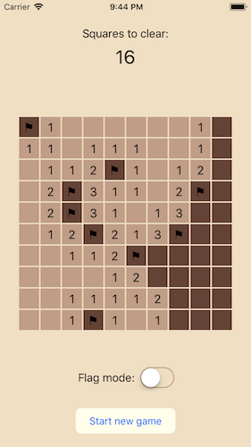

The worst possible application
In this article, I deliberately try to write the worst possible application by breaking the primary rule of application design: keep the model and view separate.
The purpose is to try to answer a question clearly: what direct effect does an application design pattern have on code? In an otherwise simple, clean implementation, will an application have any obvious flaws if I follow the worst possible application design pattern? Will it get dramatically better if I switch back to a more common pattern?
A topic of contradictions
It is really difficult to make an unambiguously true statement when talking about application design patterns. The problem is that there’s a huge distance between the vague, high-level descriptions provided by application design patterns and the specific details of an application implementation. This distance creates a situation where almost anything can be true in the implementation, despite the intentions of the application design pattern.
Out of frustration, with the entire field of application architecture, I decided to take a different approach: deliberately write an app using the worst possible application design pattern. Perhaps if I made some serious mistakes, they would have dramatic, visible effects and I could start to build a foundation for talking about application design patterns in a clear and unambiguous manner.
Seeking out disaster
What’s the worst possible application design pattern?
I deliberately devised 5 scenarios that I felt seriously undermined the typical Cocoa Model-View-Controller pattern and discussed them with 4 different Cocoa programmers that I work with, presenting each scenario as though I had encountered it in a real app, to see which mistake people thought was the worst.
Here are the scenarios I presented:
The app has a 4500 line
UIViewControllerand changing any method seems to break the behavior of every child view.
It was pointed out that this isn’t a design pattern mistake as much as an implementation issue. While it is common – to the point of cliché – it can be handled through standard refactoring and decomposition steps.
The Model contains blocks of CoreGraphics drawing code which are passed through to the View as a closure for rendering.
A few people bought into the premise that this could be a valid approach; maybe it doesn’t seem different enough to passing around SVG data. I still think it has untapped potential as one of the worst ideas imaginable.
The Model holds references to each of the app’s Controllers and when a value changes the Model directly invokes refresh on Controllers it knows to be dependent on the changed value.
This evoked some actual groans. It might be the most mind bogglingly stupid of the scenarios that I presented but much of that stupidity derives from how simple the solution is (set up proper observers/notifications).
The app has 3 separate Models and it’s the View Controller’s responsibility to keep them all in sync.
If you tell people that you’re coordinating data from 3 different web services in a single View Controller, suddenly it seems like a real-world problem and people start suggesting practical solutions; not nearly terrible enough.
I decided the winner was the only application architectural mistake where:
- nobody tried to tell me the problem could be fixed with a simple refactoring
- nobody bought into the idea that you should ever write an app this way
Drumroll…
There’s no separate Model in the app. Data is stored in whatever View requires it and the Controllers coordinate changes and communication between Views.
I think this is one of the least exciting mistakes (after the totally banal “massive view controller”) but after decades of having Model-View-Controller drummed into our collective minds, “Failure to separate the Model and View” is widely agreed to be the worst possible mistake in application design.
Very well then, let’s make it happen!
Unseparated
What does “Failure to separate the Model and View” mean?
Unfortunately, like everything else in application design patterns, it’s difficult to get a concrete answer. Prominent authors have written whole articles on this type of separation without giving a single clear rule.
I’m going to use the following rules for a separated Model and View:
- A Model interface must cleanly encapsulate all application state and must not reference any view or application frameworks.
- Non-Model components may invoke mutating actions on the Model interface but the interface must present these as requests to perform an action, not primitive data operations.
- After performing an action on the Model interface, a non-Model component must not immediately update or refresh any non-Model state. Updates dependent on Model data may occur only in response to change notifications from the Model.
“Failure to separate the Model and View” will be defined as breaking one or more of these rules.
It might not be immediately clear why I’ve chosen all of these three rules but in short: it forces the Model to be walled off from the rest of the app and forces the rest of the app to avoid assuming how the Model works.
Spoilers: This article will eventually discuss “leaky abstractions”. Avoiding leaky abstractions is the real reason why it’s so important for the non-Model components to carefully avoid assuming how the internals of the Model work.
There’s an app for that
It turns out that I’ve already shared an example of a program that lacked Model and View separation. A few months ago, I shared my “Mines” code from nearly 20 years ago. However the use of 90s era Classic MacOS C++ in that implementation gets in the way of a proper in-depth discussion. So I took a couple hours and implemented a streamlined version as an Swift iOS app.
I present the end result, totally devoid of any Model separation, Mines for iOS:

That seems about right: the worst possible application is a Minesweeper clone.
A quick summary of the app
The app’s content is the minefield. I’ve used 100 squares (intended to be presented in a 10 by 10 grid). Each square potentially contains one of the 15 mines, randomly distributed on new game and each square starts covered but can be manually flagged or uncovered.
There’s no other data required by the app but I’ve chosen to cache the number of adjacent mines for each square and the number of non-mine squares remaining to be uncovered before the game is considered “won”. The app includes a “Flag mode” slider but its value is considered “transient view-state” and it is omitted from the Model.
If the app had a separate Model, it would include:
- The 100 squares, each with
isMine,adjacentandcoveredvalues - The
nonMineSquaresRemainingcount - Functions to generate the squares for a new game (including
isMinedistribution andadjacentcounts). - A function to handle clicking on a square (which might uncover or flag the square and might need to update the
nonMineSquaresRemainingcount).
Of course, the app doesn’t have a separate Model because that would be too sensible.
Breaking all the rules
Let’s look at what horrible things I’ve done by comparing against the rules I gave for a properly separated Model.
1. Model must be encapsulated and must not reference the view or application framework
Each of the SquareView objects (instances of UIButton) which represent the tiles in the game contains the following properties:
var covering: Covering = .covered
var isMine: Bool = false
var adjacent: Int8 = 0This is not a cached representation of state store in another location, this is the only representation of the minefield, spread across the 100 different UIButton subclass instances used to display the minefield.
It’s as big a violation of rule 1 as possible.
2. The Model interface must expose actions, not primitive data operations
The primary change that occurs during the game is updating state when a square is tapped. How does this change occur?
// In a function on the GameViewController...
squareViews[index].covering = .uncoveredIn short: when a SquareView is tapped, it sends its action to the GameViewController which maintains an array of the SquareView buttons that comprise the minefield. The GameViewController reaches directly into the affected SquareView and directly edits its covering property.
It’s as big a violation of rule 2 as possible.
3. Updates may occur only in response to change notifications from the Model
Here’s the code invoked when you click on a mine:
if squareView.isMine {
squareView.covering = .uncovered
nonMineSquaresRemaining = -1
refreshSquaresToClear()
squareView.setNeedsDisplay()
return
}When the GameViewController changes either the covering property on a SquareView or the nonMineSquaresRemaining value on itself, it must also call either setNeedsUpdate on the SquareView or refreshSquaresToClear on itself to force a refresh.
It’s as big a violation of rule 3 as possible.
How horrible is the result?
The GameViewController feels like two completely different classes smashed together – it’s clearly doing too many things.
And the SquareView (a UIButton subclass) contains init(fromDictionary:) and toDictionary() functions to aid serialization and deserialization during UIStateRestoration – an assignment of responsibility that seems hilariously misplaced.
But the app isn’t a complete mess. The underlying logic remains clear and simple and none of the work seems laborious or chaotic.
I wanted a horror show but there’s nothing particularly horrific here. Maybe this experiment isn’t working.
Properly separated Model-View-Controller
Perhaps I need a more direct comparison with a more typical Model-View-Controller implementation to really highlight what’s wrong here.
For this implementation, please look at the “separated” branch in the repository.
In this version, Square and Game are new types in the new Game.swift file. Game is the interface to the Model, its only mutating function is tapSquare and changes must be observed through the Game.changed notification.
Square contains the game-related data members that were previously on SquareView and Game contains the game-related data members that were previously on GameViewController:
struct Square: Codable {
var covering: Covering = .covered
var isMine: Bool = false
var adjacent: Int8 = 0
}
class Game: Codable {
private(set) var squares: Array<Square>
private(set) var nonMineSquaresRemaining: Int
}The SquareView still contains the data it needs to draw itself but this data is now merely a copy of the corresponding Square value from the Game object.
class SquareView: UIButton {
var square: Square { didSet { setNeedsDisplay() } }
}In addition to moving data members around, the following functions from GameViewController were all moved to the Game class:
func loadGame(newSquareViews: Array<SquareView>, remaining: Int)
func newMineField(mineCount: Int) -> Array<SquareView> {
func uncover(squareViews: Array<SquareView>, index: Int) -> Int {
func iterateAdjacent(squareViews: Array<SquareView>, index n: Int,
process: (Array<SquareView>, Int) -> ()) {And the button action method on GameViewController:
@objc func squareTapped(_ sender: Any?)has its contents moved to the tapSquare function on the Game class (this function is still called from the squareTapped function on GameViewController).
Since the SquareView no longer contains the primary representation of the data, the toDictionary() and init(fromDictionary:) functions it contained are gone. The new Game instance is compliant with Swift Codable so serialization happens automatically on the Model.
Finally, view updates are handled by making the GameViewController observe changes on the Game.
NotificationCenter.default.addObserver(self, selector: #selector(gameChanged(_:)),
name: Game.changed, object: newGame)What does the comparison reveal?
There are a handful of minor functionality changes but the biggest change is that code has moved around.
At first glance, that seems fairly underwhelming – fixing the worst mistake in application design merely involves moving some code around. Surely a little code organization isn’t really that important?
I’m a liar
Before I answer why this is important, I should also be more honest. While “moving some code around” is the superficial effect, there was more work involved. Specifically:
- I identified the Model data
- I identified all functions that acted purely on Model data
- I created a system of notifications for outputting the Model data
- I ensured that the functions and notifications provided a simple way to interact with the Model
- I implemented an interface around this entire concept.
It’s difficult to see all of this work from a side-by-side analysis though because I had already done most of it in the unseparated version of the app. The idea of separating a Model is so ingrained in my head that I had created a de facto Model even when trying to avoid it.
To highlight this instinctive separation, I reordered the functions on the GameViewController. Look at GameViewController.swift in the unseparated version of the Mines app and you’ll see that everything above line 101 of the GameViewController is strictly Model code. It isn’t separated out into another class but it isn’t directly mingled with view code either.
Even while writing this article, when I gave a “A quick summary of the app”, I spent the entire time describing the Model, even though the app didn’t technically have a Model at that point.
So yes, the code comparison mostly shows moving code around but that’s really just making the organization reflect what I’d already written – a de facto (if mingled and obscured) abstraction of the game’s data and logic.
The Model as an abstraction
The separated Model implementation of the app clarifies the abstraction offered by the Model and strictly enforces it.
By abstraction, I mean that the Game interface performs a lot of hidden work internally but externally it appears quite simple. It exposes two non-private functions – init and tapSquare – that match the two sole means of interaction available to the user during the game (starting a new game and tapping on a square). The output from the Game is the minefield state communicated through the Game.changed notification.
The Game abstraction simplifies 100 lines of code to construct and maintain the game down to 2 actions and 1 output. While there’s some work to correctly observe the notification output (roughly 10 lines in the GameViewController), this abstraction still represents a significant code size and complexity reduction from the perspective of the GameViewController.
This is the importance of having a Model in your application design pattern: it allows you to reduce complexity by:
- reducing steps required in the rest of the program
- removing the need to ensure correctness from the rest of the program
- removing the need for action locations to know about state observing locations
It’s important to have the Model be a freely chosen abstraction because the Controller and View are not. UIViewController and UIView subclasses are collections of functionality, largely dictated by the implementation constraints and requirements of the UIKit framework. They’re not free to model an arbitrary abstraction. The Model is valuable because it is an application framework independent component.
Leaky and bad abstractions
I’ve already argued that there was a de facto Model abstraction being used before I officially separated the Model. However, an abstraction only works to reduce complexity when steps are taken to avoid outside components assuming its inner workings – the de facto abstraction offered no real hiding or shielding of its implementation.
When outside components assume the inner workings of an abstraction, we call the abstraction a “leaky” abstraction. If there are no hidden workings of the interface then it isn’t really an abstraction at all.
For example, imagine that when I separated the Model, I hadn’t moved all the functions into the Game structure, I merely moved the data members and exposed them as mutable properties:
class Game: Codable {
var squares: Array<Square>
var nonMineSquaresRemaining: Int
}If this was the entire Model definition, all of the work to maintain it would remain on the GameViewController, exactly as before. This non-abstracted Model interface wouldn’t offer any benefit to the program.
Application design patterns are potentially useless
This is why I have problems unambiguously discussing application design patterns. A Model should provide an abstraction, it should reduce complexity and improve locality of your code and logic. But whether it actually helps is dependent on your implementation. If you choose a useless abstraction for your Model then there’s potentially no benefit to having it separated.
Application design patterns don’t provide implementations, they merely suggest some components – which on their own are completely useless. It’s the programmer’s responsibility to use good abstractions where possible for these components. Following a good application design pattern should lead to good abstractions but it doesn’t just magically happen.
A useful way to think about application design patterns is as a thought experiment which challenges us to explain our program from different perspectives. An application design pattern poses the question: if you were forced to route updates or actions in your program through an interface between these components, how would you explain your program’s state and behavior at that boundary? The question encourages an abstraction of the requirements and available options at a specific vantage point. Whether considering that perspective leads to a clean, simple abstraction of your program’s behavior will determine whether that application design pattern is beneficial for your program.
Conclusion
Depending on your Model abstraction, either of the following might be true:
Separating the Model from the View mostly just moves code around.
Separating the Model from the View reduces overall implementation complexity through careful abstraction, better separation of concerns, better code locality and simpler propagation of data dependencies.
In fact, both of these statements could be descriptions of the same program, as in the case of the Mines app.
Writing an application without a separated Model is considered the worst application design, not because it immediately leads to disaster but because it indicates that you’ve never tried to clearly isolate what your program does. We don’t write applications because we love constructing views and controllers – these are merely a means to an end. We write applications to present our Model, perform actions on it and view the results.
The worst possible application design is one that doesn’t understand what the app is and obscures its own nature by scattering it around arbitrarily.
Looking forward
The Model-View-Controller pattern typically describes the Model as containing all the data in the application and the View as a mere a display of that data. However, there is often data that affects the display of a View – like scroll state, navigation state or uncommitted data entry fields – that exists only in the View and not in the Model, in apparent violation of the Model-View-Controller principles.
In the next article, I’ll look at what happens when we require this view-state to pass through its own Model and how this view-state can drive the entire application.
CwlLayout: a Swift wrapper around Auto Layout
View-state driven applications